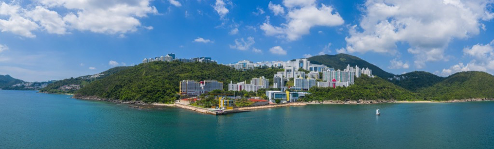

HKUST · MARINE INTELLIGENCE
An ocean of
possibility.
We bring AI, robotics and marine science together to explore, understand and protect our living ocean.
Dive into our researchExplore. Understand. Protect.↓
CONNECTED BY THE OCEAN
Curiosity meets
real-world impact.
From the smallest marine organisms to intelligent underwater robots, we connect discovery with action for a healthier ocean.
Get to know CMIFOUR CONNECTED RESEARCH AREAS
New ideas.
Deeper understanding.


THE HKUST LIVING LABORATORY
Our campus.
A world of discovery.
The ocean is on our doorstep. Our coastal campus brings researchers and students together to observe, experiment and learn in the field.
Explore the living laboratoryOUR PEOPLE